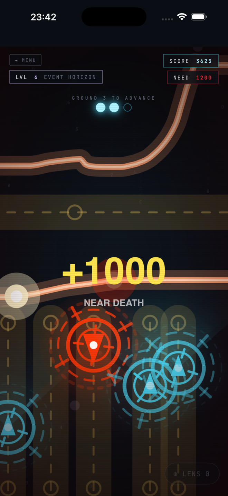
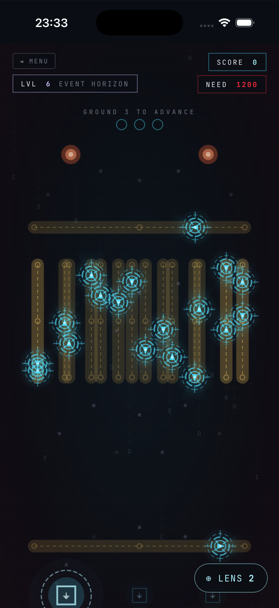
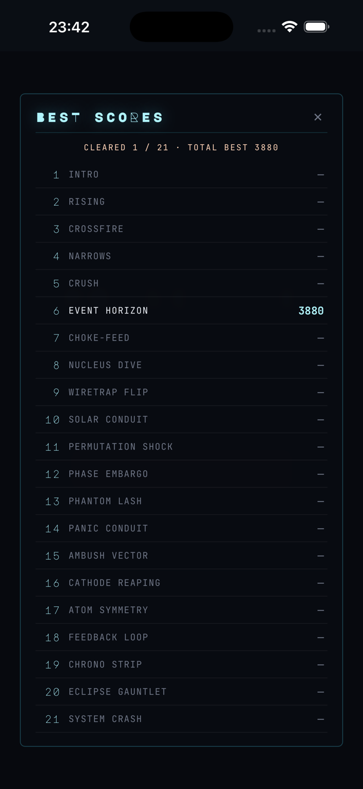

PULSEWIRE is a free browser game — a cyberpunk arcade thriller you can play instantly, with no install and no ads. Ground three sparks to break each node — but the only points worth having are the ones you steal by skimming death. The closer you graze a patrol without touching it, the higher you score. Hug it by a hair and time fractures into slow motion. Every run is a negotiation with your own nerve.
Two runs. One wire. The swarm in between.



21 Nodes
From the first clean lanes to SYSTEM CRASH — the safe corridor narrows and the score floor rises with a dozen hostile classes.
Skim to Score
Graze a patrol without touching it to bank points. The closer you dare, the higher you climb — hug it by a hair for a near-death +1000 and time fractures into slow motion.
Rewind, Don't Die
Lift to drop an anchor. Get clipped and you rewind to it instead of dying — insurance for the bravest lines, taxed on every use.
The Charge Ladder
Seven ranks, one sealed ledger. Badges bank on run totals — the machine files you where you belong, and says so to your face.
One Finger
Pure skill, one thumb. Draw the wire; the lens zooms in on the impossible gap. No fluff.
100% Offline
No ads. No subscriptions. No accounts. No data collected — nothing ever leaves your device.
The complete 21-level campaign is, and stays, entirely free. A single one-time unlock — inside the app — opens the restricted sectors of the mainframe:
The AI Arena
A brutal, single-life gauntlet across all 21 grids, each one raced fresh against a ticking 16-second clock. Intercept its path to shatter its spark.
Level Editor
Full Architect rights. Drag, drop, scale, and tune the speed and aggression profiles of 12 distinct hazard subroutines.
Director's Cut
Review your recorded runs with a keyframed cinematic camera, time-warp slow-mo filters, and one-tap video export.
Is PULSEWIRE really a free browser game?
Yes. You can play PULSEWIRE free in any browser — no install, no signup, and no ads. Tap Play and trace your first wire. The full 21-level game is also a free download on the iOS App Store.
What kind of game is PULSEWIRE?
It's a cyberpunk arcade thriller — a one-finger action game with the pick-up-and-play feel of a casual arcade game and the spatial pressure of a puzzle. A retro neon aesthetic wraps a nerve-driven core: you score by skimming death, not avoiding it.
Do I need to install anything or create an account?
No. The browser version runs instantly — no install, no signup, and no data collected. The iOS app is a free download if you want all 21 levels and haptics.
Does PULSEWIRE work offline?
The iOS app is 100% offline — no network connections, no ads, and nothing ever leaves your device. The browser game loads once, then plays client-side.
What makes PULSEWIRE so tense?
Playing it safe locks you out. The only points worth having are the ones you steal by grazing a hunting patrol by a hair — a NEAR-DEATH +1000 that fractures time into slow motion. It's a nerve sport: pure tension, one thumb.
The grid doesn't chase. It just makes the world smaller, and waits to see if you flinch.